编注：本期内容为少数派编辑部于去年发布的「新玩意 · 特别篇」。结束春节长假进入工作状态已经有了一段时间，不知道你是否已经完全调整好状态全意投入新一年的工作？
趁着长假，少数派编辑部的工友们也花时间为自己购入了一些工作时的「搭档」，希望这些工具能帮自己提高工作效率，或者提供更好的工作氛围及情绪。经过了这一段时间的使用之后，我们也将自己觉得好用的一些玩意分享出来，一起来看看。
💾
路中南
Mac mini M4 基础款
如果说这一波国补里面哪一款是「怎么感觉大家都买了」的爆款，那么一定是 Mac mini M4。本来就是定位 macOS 入门的小主机居然还能再直降一千，让我一下子动起了替换掉手上的英特尔 Linux 办公小主机的念头。配置方面依然选了我认为性价比最高的入门款 16+256，到手只要三千六。比起配置，这一次的 Mac mini 终于换上了为 M 芯片量身打造的小巧机身，新的设计里前置的两个 C 口像是小眼睛讨喜可爱，对比起旧款国产工控机，颜值加分不少。
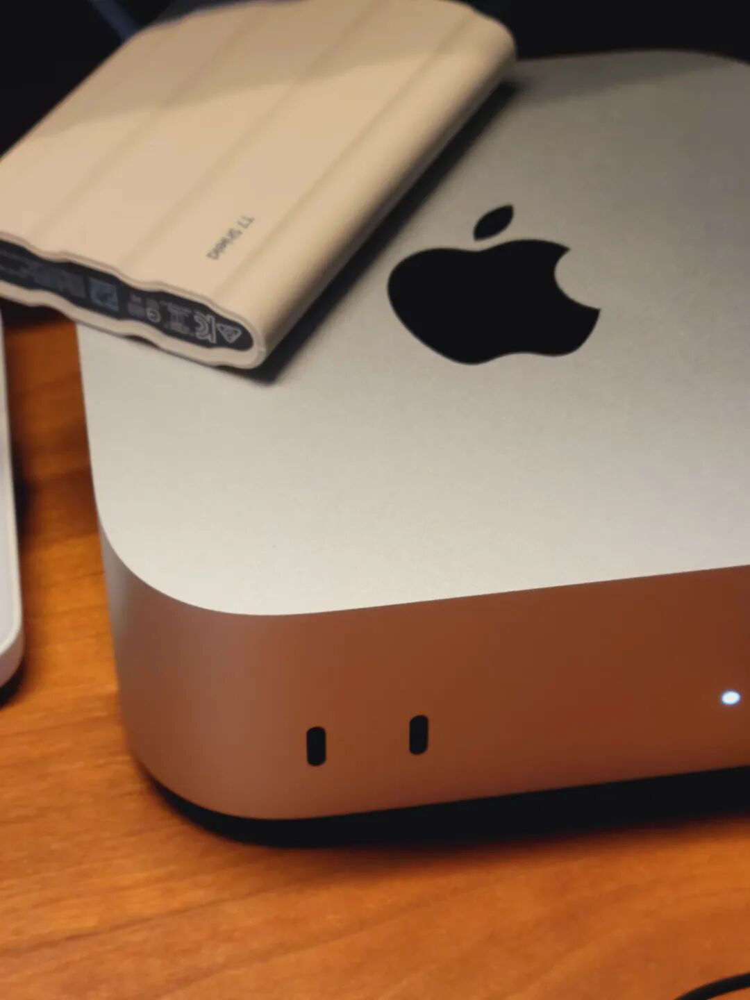
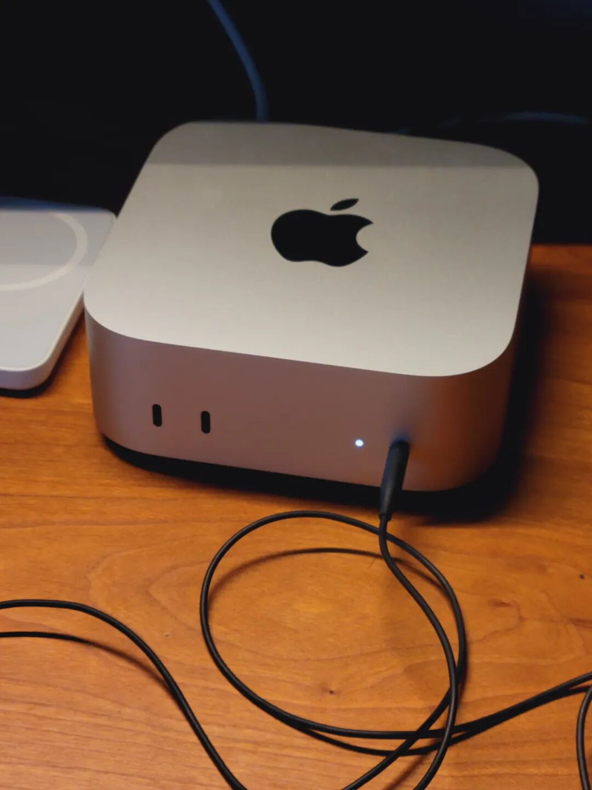
AI 浪潮让我感知最强的一点：苹果终于舍得普及 16GB 的 RAM。从到货到开工，迁移完之前的工具差不多花了一个晚上，不知为何感觉这 16GB 比我想象的还耐用些。日常上班，浏览器开了 Safari（20+ tabs）和 Chromium（运行网页应用和少数派编辑器），开启微信与飞书再加上 PyCharm 的情况下，RAM 依然绰绰有余。另外我还常驻运行了一系列效率小工具，供你参考：
LocalSend：负责把 android 机器的内容通过局域网传输到 macOS上；在 AirDrop 失灵的时候它还能稳定传输。 ChatGPT 客户端：免费版，全局唤起很好用，主要是问点百科小问题，还可以联网搜索。 CotEditor：我的主力文本编辑器，轻快强大。搭配 GPT 也不用自己想正则处理文本了。 UpNote：早前买断的全平台笔记客户端，存放一些之前写的备忘。 Tiny Image：TinyPNG 第三方客户端，美观好看，每个月 500 张的免费 API 额度足以应付需求。 Shottr：截图增强工具，OCR 中文好用，批注也方便，付费支持了。免费就是多一个弹窗，没有广告。 Maccy：剪贴板增强工具，开源免费，于我来说简单够用。因为会存点图片，可能稍微占点RAM。 Stats：在导航栏显示系统状态，下图就是来源于它。根据它的数据，这款 Mac mini 在打字办公的情况下功耗仅有 4W。
虽然这么说有点得了便宜卖乖的感觉，之前在 Linux 寻找工具的体验称不上多好，macOS 上就感觉工具都还好找，美观免费的也不少，还有类似 Awesome Mac这样的项目兜底。
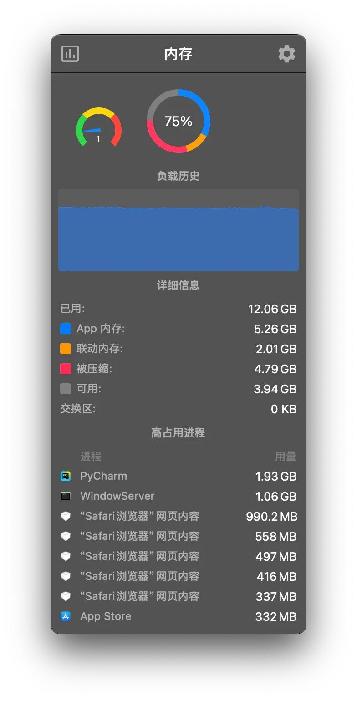
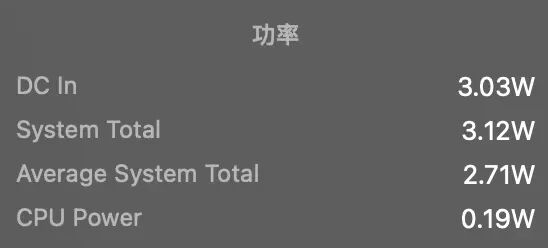
类似的生态优势还体现在配件生态上，Mac mini 一出，底部的开机键位置就立刻获得了关注，第三方创意 3D 打印件、量身定制的硬盘盒就已经上架开卖了。不过我在这个方面兴趣不大，只买了一个三星移动固态硬盘 T7 Shield 2TB 放点体积大的素材（最后发现用不上已经吃灰了），256GB 放点办公文件绰绰有余，最大体积的文件就是开源模型了。
说到开源大模型，前段时间火到现在的 DeepSeek R1 其实也是可以直接放在这台 Mac mini 上跑的，不过需要关闭几乎所有工具腾出 RAM，起一个 LM Studio。我选用的模型是 DeepSeek R1 Distill Qwen 14B Q5_k_m，起完后还可以通过局域网 API 的方式借给其他设备调用。一般来说模型文件在 10GB 内的基本都可以运行，速度还算可以。
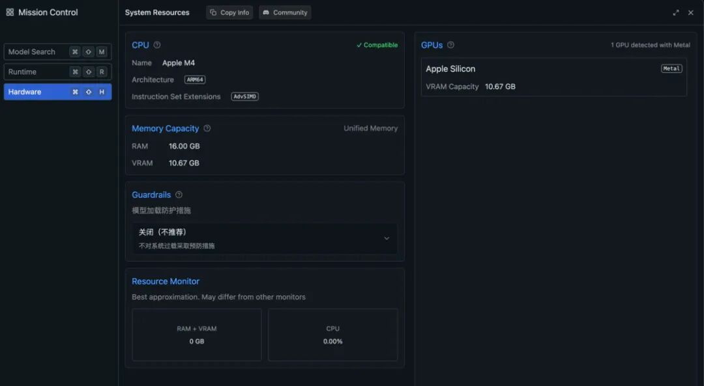
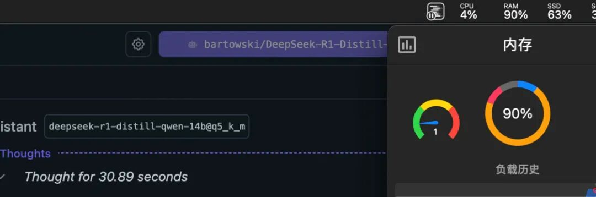
就在前几天，我为这台「办公搭子」购置的外设也终于到了：Magic Mouse 和 Magic Keyboard with Touch ID，Touch ID 可以便利解锁，Magic Mouse 也相当合我心意，很想追查一下脑子里面觉得它不好用的印象是从哪里来的。
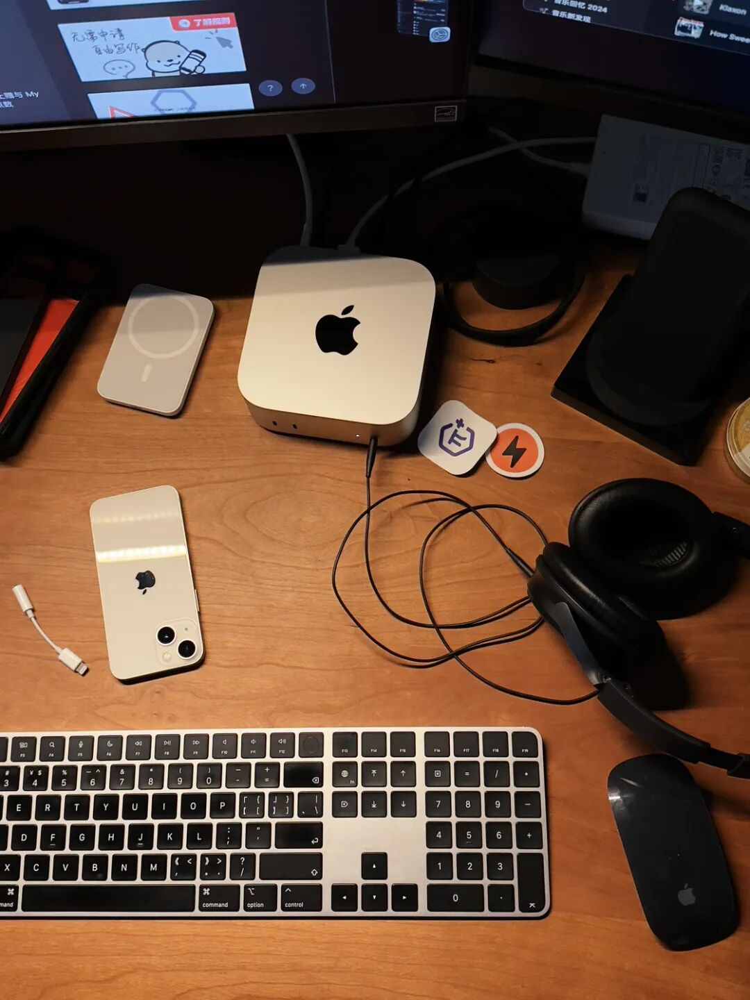
🖥️
张奕源 Nick
ASUS ProArt PA279CRV 显示器
我之前办公用的显示器坏了，我派又暂时没采购新的。当务之急，我就先「自费上班」，购买了一台华硕的 ProArt 显示器（PA279CRV）。
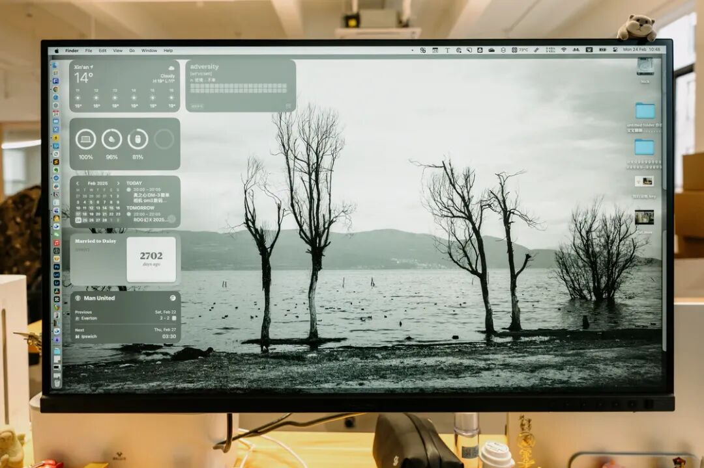
作为办公显示器，我对其要求非常明确：必须高色准；最好支援 95% 以上的 Adobe RGB 色域覆盖或 98% 以上的 DCI-P3 色域覆盖；能通过 USB-C 接口给 Mac 充电。以上三点，华硕的 ProArt PA279CRV 全部完美满足。
——它提供 99% 的 DCI-P3 和 Adobe RGB 色域覆盖，而且在两个模式下的 dE 值都小于 2，显色非常精准；不仅有 USB-C 电源输出，而且充电功率可以达到 96W，完全可以支撑 MacBook 的充电需求。在此基础上，DCI-P3 模式下还能设定显示器的 Gamma 值，默认是很暗的 2.6，我改成了更适合日常的 2.2，同时兼顾了我对于色域和亮度的要求。
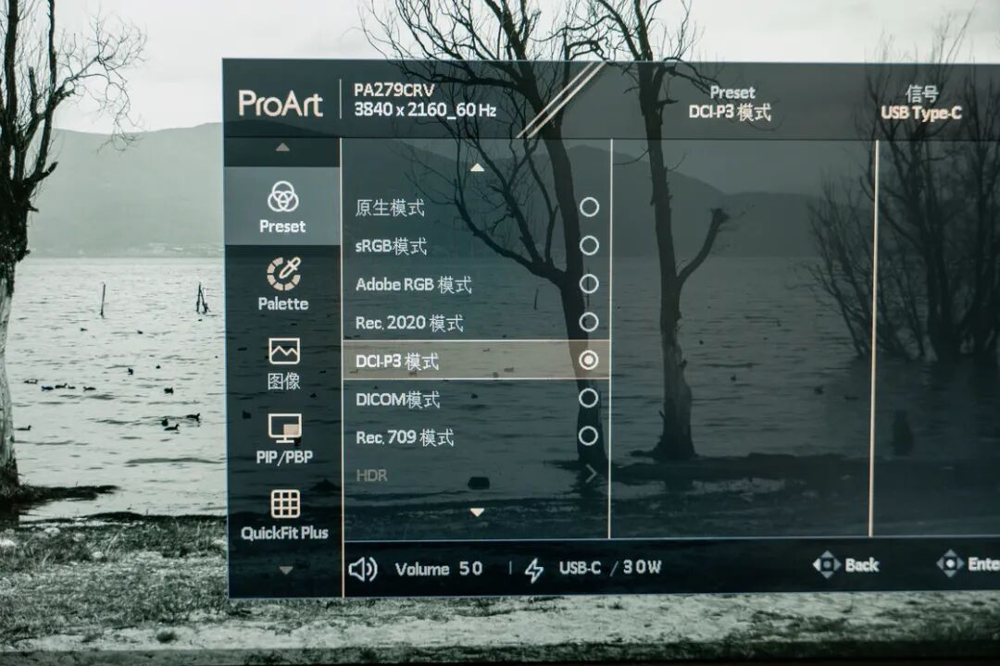
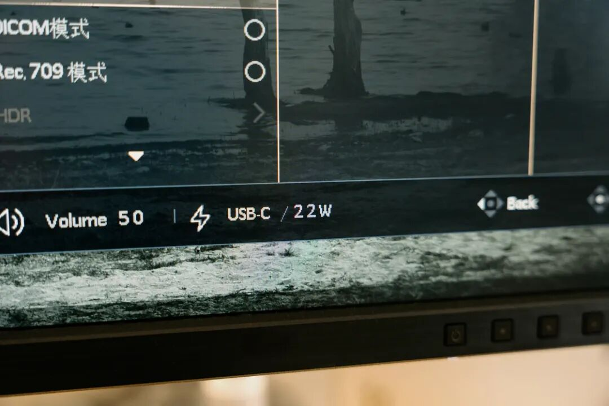
系统菜单不仅可以方便地切换色域，还能显示 USB-C 接口的实时输出功率
ProArt PA279CRV 还支援通过菊花链串联多台显示器，我目前虽然只用到一台，但的确有再搞一台用来剪片时监看画面的想法。未来如果菊花链上之后有了新体验，再找机会详聊。
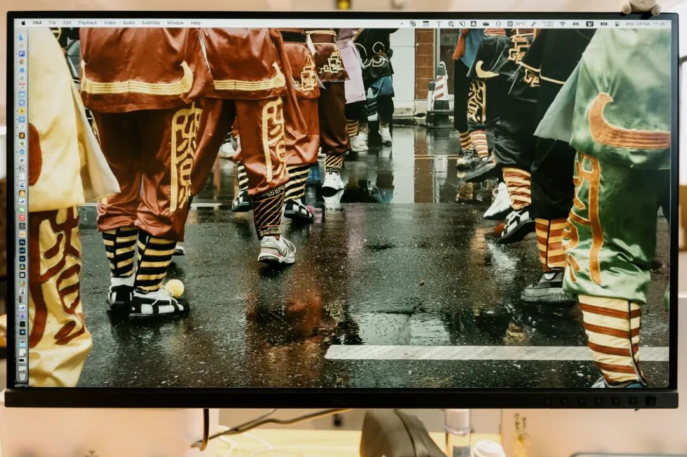
我在购买这台显示器之前也看过同价位的其它显示器，家里用的则是 LG 的同价格档产品。但我最终选择 ProArt 的原因在于，只有它在三千元的价格段内兼顾到了我对设计显示器的几乎全部需要。
另外，我对华硕的 ProArt 系列一直好感爆棚，此前就用过第一代的 ProArt 笔记本和上一代的 ProArt 显示器（但这显示器有个坏点，售后时产品已经退市，京东直接退款给我了），最近也在考虑借国补的机会把笔记本换成二〇二四款 ProArt 创 16。不排除哪天我一冲动就真下手了，届时一定拍片汇报使用体验。
🪫
张奕源 Nick
酷态科充电头及充电线
我去年实现了「家庭充电升级计划」的 1.0 版本，即所有 USB-C 的充电线都换成了 Thunderbolt 4。今年，这项计划启动 2.0 版本，目标是所有充电头都换到 100W 以上功率，充电宝也逐步百瓦化。
酷态科的充电头和充电线就是这个计划的一部分。
充电头我买了 10 号和 15 号，分别拥有最大 120W 和 140W 的充电功率。这类产品市面上各品牌的性能和模样都差别不大，我就不多浪费笔墨了。
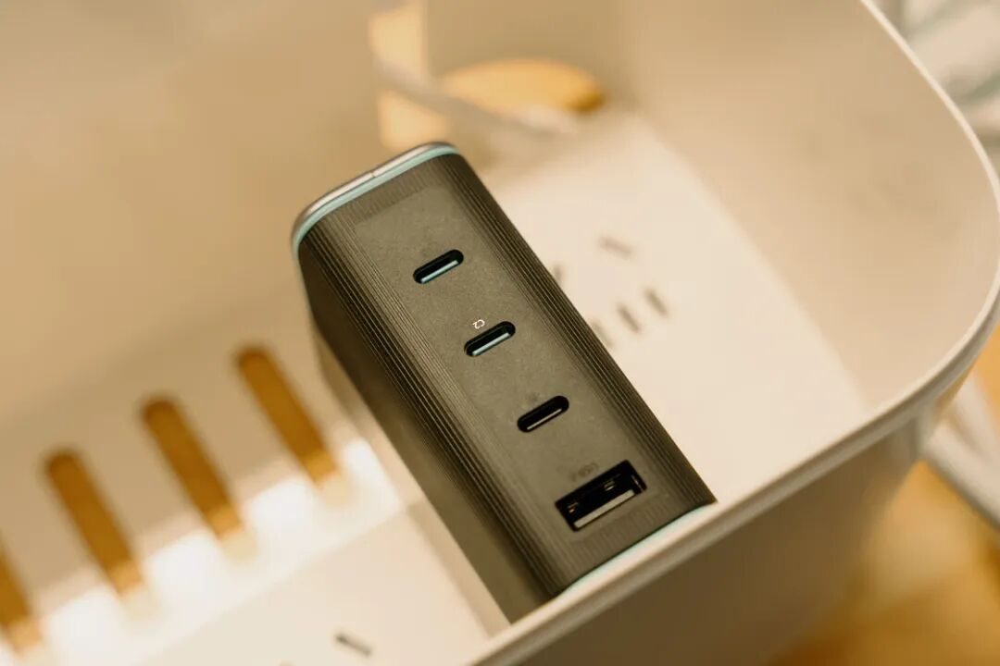
15 号充电头，体积很大，收纳盒有点塞不下
有趣且值得一聊的是酷态科新出的 10 号超级电能线。从形态上来说，这是一根一拖二的 USB-C 充电线，它的独特之处在于自带了一个充电协议的转换模块，实现了两个主要功能：一是让某些不兼容 PPS 协议的 PD 充电头支援该协议，二是将单个的充电口分化为两个快充口。
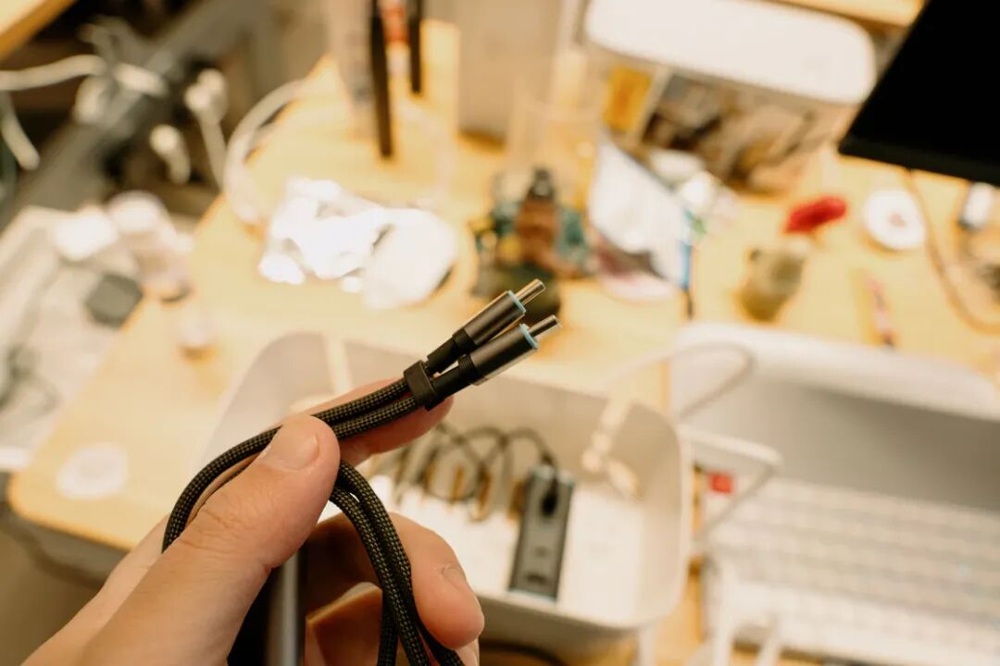
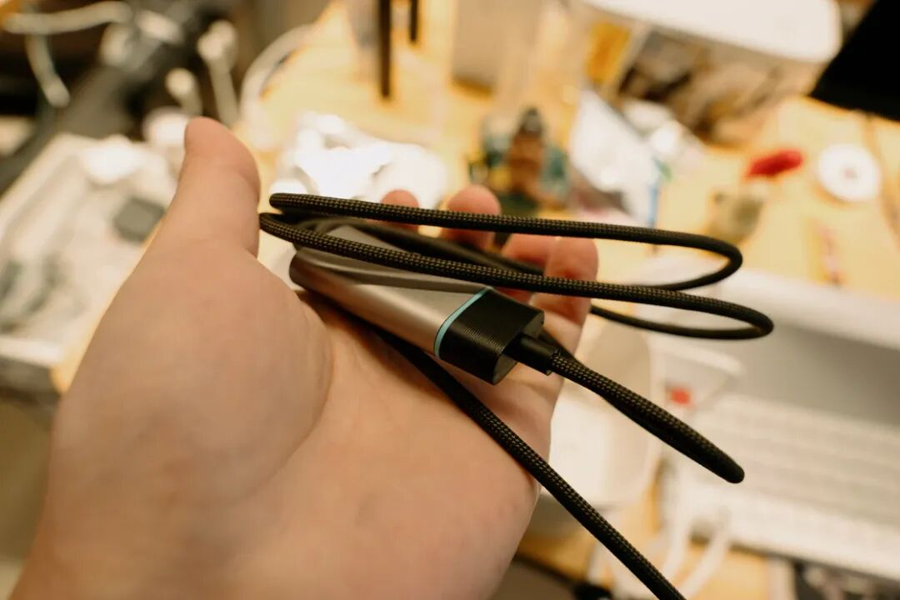
10 号超级电能线，协议转换主要靠多出来的那一坨小方块
10 号超级电能线的单口最大功率是 100W，在分充时最大可以达到 70W 加 30W 的组合。它还能将 PD 协议转化为最高 90W 的小米快充，考虑到小米 15 Ultra 即将发布，我肯定会做一段时间的 Mi Boy，这个功能也能让我顺带受益。
📖
张奕源 Nick
文石 Leaf3C
黛西前两天看上了我的文石 Leaf3，我就借机搞了一台 Leaf3 的彩色版本 Leaf3C。
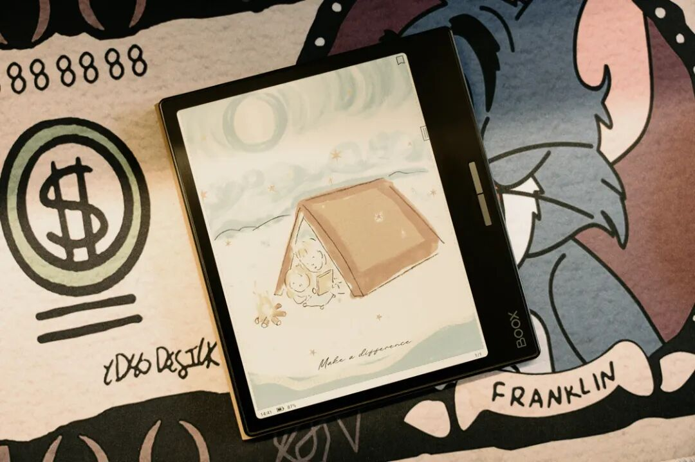
文石 Leaf3C 及其彩显效果
两者的处理器完全一致，3C 的内存和存储容量从 3GB 加 32GB 升级到了 4GB 加 64GB。理论上来说，在多开 apps 时，3C 会更流畅或者更少杀后台。但我平时只使用内置的阅读器看书，不开其它任何 app，所以对此并无感觉。
在购买 Leaf3C 之前，我也考虑过其它同类型的阅读器，譬如我中意很久的 Kobo Libra Colour。没选择 Kobo 的主要原因在于，其系统并非 Android，限制了潜在的扩展场景，而且 Kobo 的原生系统想要开启导出读书笔记功能还需要小小地修改一下系统文件。虽然谈不上多麻烦，但终究得折腾一道。如果改用国产阅读器，那终归是文石系统最为洁净趁手，系统的自带阅读 app 质量也不错，还不必再注册其它帐号。思虑之后，文石为安。
文石 Leaf3C 的萤幕用的是 Kaleido3，黑白状态下 PPI 为 300，彩显时则为 150。当下的彩色面板已经能做到在不影响黑白显示精度的前提下增加彩色效果，可以预见的是，未来的中高端电子阅读器将逐步走向彩显化。Kobo 的 Libra 系列就已经取消了黑白版本，国产阅读器跟上风潮应该只是时间问题。
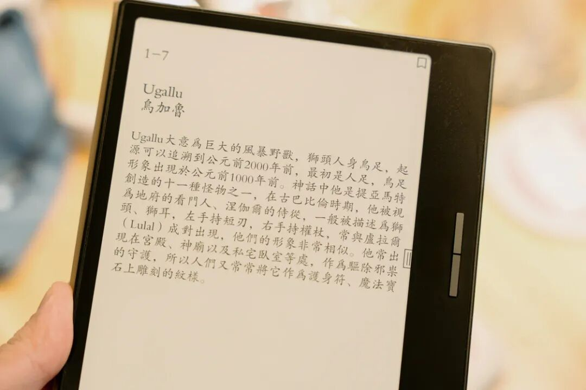
显示黑白时和 Leaf3 没区别
Leaf3 系列唯一的问题是翻页键太瘦小，位置也凑得太近，导致按几下就会手累，用着并不舒服。我和黛西都会在长时间看书时使用触控翻页，且都觉得这么翻更加舒服、直觉。下一代 Leaf 如果能效仿 Kobo Libra 的设计，把翻页键分开且做得圆润一点，我愿意再买一台。
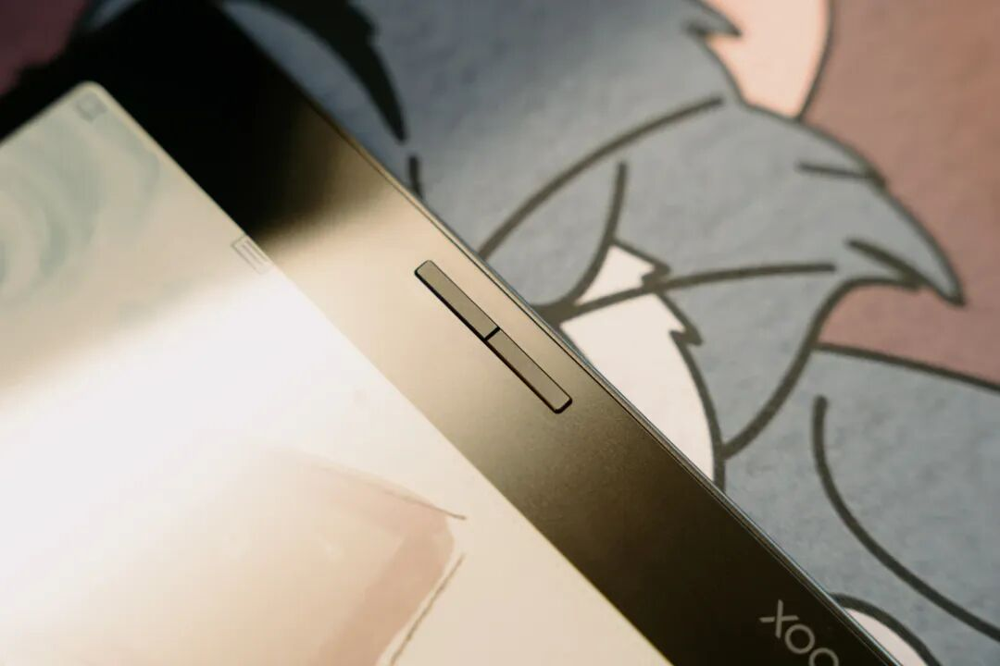
Leaf3 系列的翻页键又瘦又硬
⌨️
北鸮
Temper 矮轴键盘套件
经典老番来了，开工怎么可能不买键盘呢！到 2025 年了，我还是保留着工作时手边多摆几把键盘的习惯，主要还是为了通过改变手感来给一时淤塞的脑子通通路。我通常的习惯是留两把 60% 及以下配列的小尺寸有线键盘，一把上很响的有声段落轴，一把上轻压力的线性轴，随时备用；再准备一把矮轴键盘或人体工学键盘，调整手感用；如果没什么新品要玩，最后我会再从柜子里挑一把近期的心头好。
最近这个心头好、矮轴和人体工学的需求出现了第一次三合一，就是这把矮轴键盘「temper」。
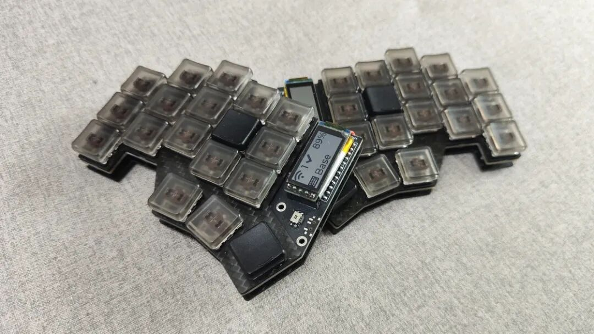
Temper 是一款 raeedcho 设计的开源键盘硬件，源自另一款开源键盘 chocofi。Chocofi 是一把使用凯华一代 Choc 矮轴的键盘，而 temper 指的是巧克力的调温过程，作者在前者的基础上做了 nice!view OLED 模块和无线适配，用起来比原版更自由。理论上这种开源硬件是可以自己做的，但我懒，就找了把现成的
目前我给 temper 配的是一代的凯华 Choc 茶轴，没什么特点，但确认感不错，对小键盘比较友好，能有效减少误触。因为 temper 是一把非常小的 3×5 直列分体键盘，键位上只能放下主键区，数字都放不下，需要大量依赖切层操作，误触对输入的伤害也会呈指数增长。矮茶轴这种有确认感的轴体这时就比通常我使用的轻压力轴体更实用。键盘配的 nice!view 模块可以查看键盘连接状态与切层状态，因为它可以记忆五把设备的连接，这个显示功能还是比较必需的。
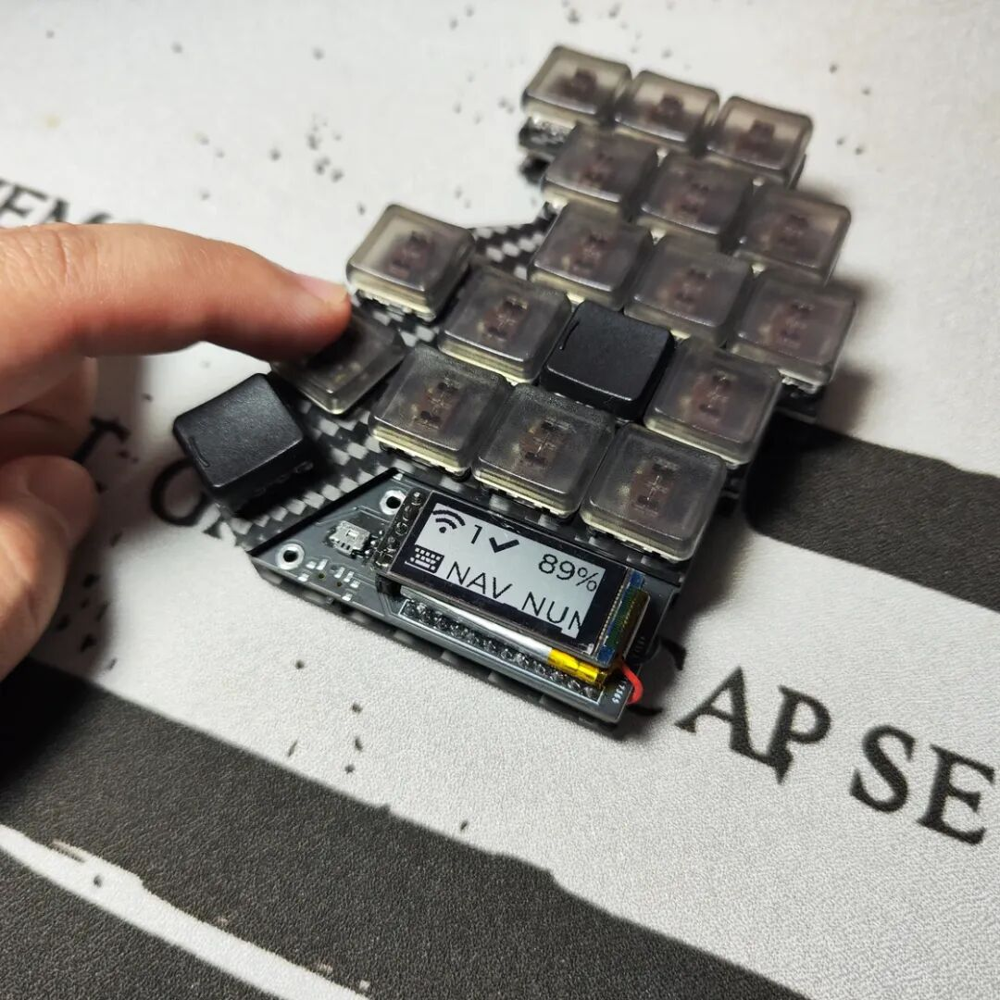
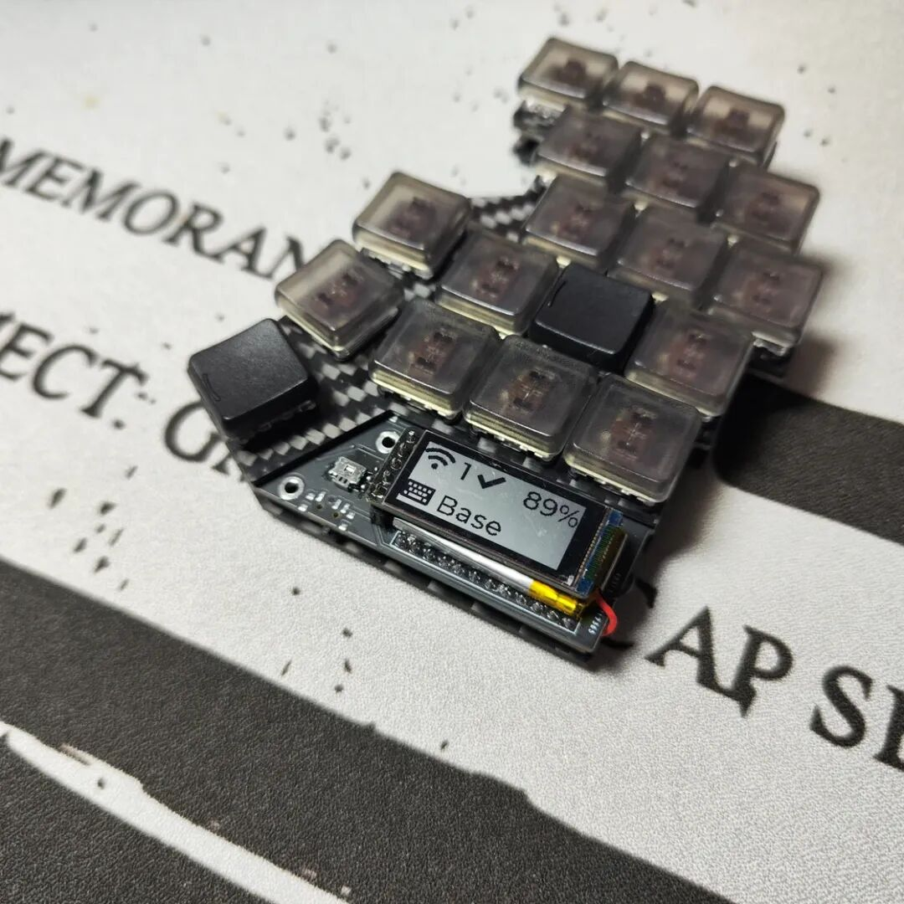
这键盘主要的优点就是兼具了工学键盘的舒适和矮轴键盘的轻薄。左右纯无线分手可以让双臂找到一个最舒服的开合角度，给桌面留出最大的空间；直列键盘则是减少手掌找字母时的移动范围，配合矮轴，手腕几乎没有多余的角度，舒适程度会大大提升。缺点的话已经体会到了，利于自制的结构本身对元件的保护有限，出去带着用了一段时间，屏幕元件已经坏了一个，原本屏幕上面的亚克力保护板也碎了，还是得自己动手整整。目前我工作时的新习惯，就是让 temper 放在与椅子扶手相对应的两边，手臂和手腕都不用扭曲，键盘中间再放一个随时记东西的手写板或纸质本，大概如下所示，真的很爽。
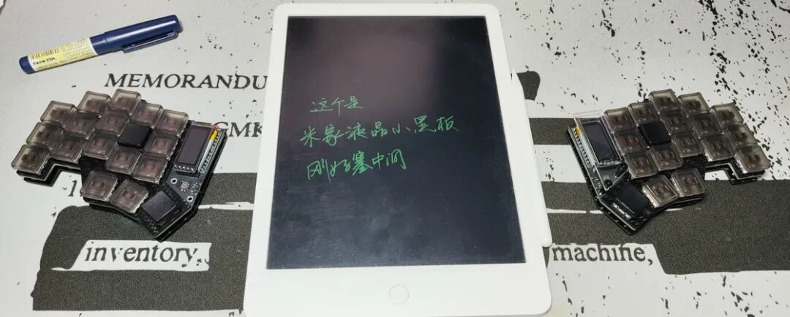
🗂️
waychane
Twelve South DeskPad 桌垫
既然大家都写了电子产品，那我写个不插电的吧。
年前感觉到正在用的 Grovemade 桌垫已经有了很多污渍，还有边缘翘起等问题，就想着换一块工作桌垫。本来已经买了 Apple Store 同款的一张大尺寸的皮垫，发现鼠标在垫子上使用时并不是很灵敏，长度也不是很够，于是就摆到床头柜作装饰了。
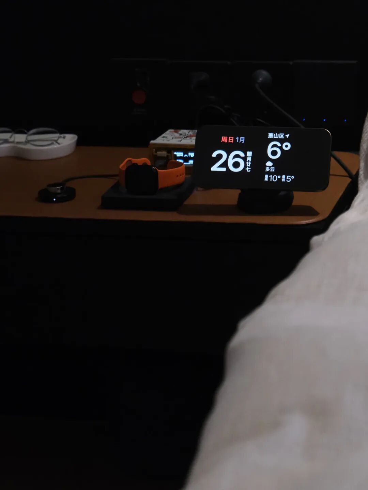
当务之急就是再找一块合适的桌垫。既然是放在工作桌上用的，好看自然是首要标准，另外则是适合设备摆放的尺寸、抗污渍等这些功能特性。选来选去最后入手了 Twelve South 的 DeskPad 桌垫。
Twelve South 应该不必过多介绍，简洁的设计风格也让其产品多次登上 Apple 发布会及线下门店，这款 DeskPad 刚好是黑色款式，与我桌面的整体风格也比较搭配。
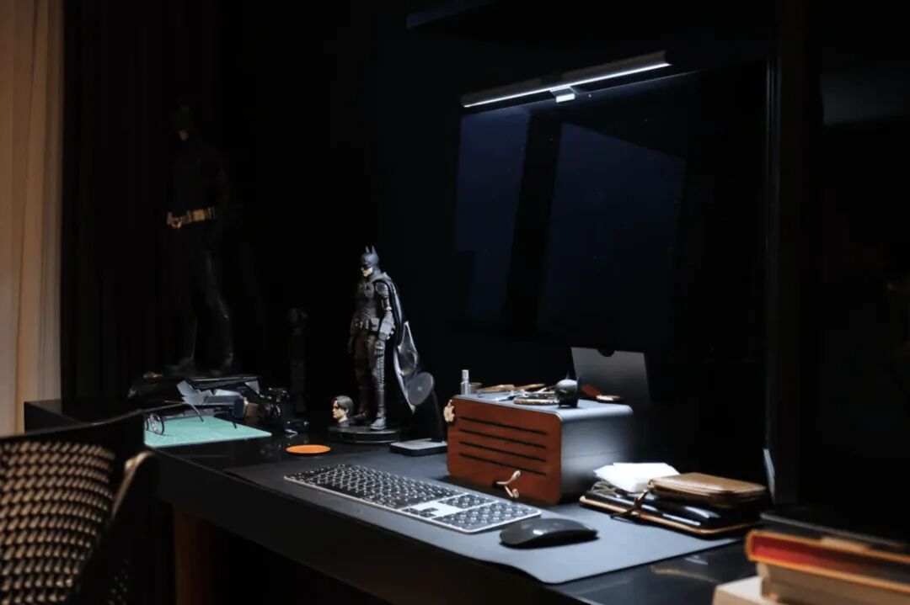
DeskPad 的尺寸为 74.6cm 长和 40cm 款，长度方面可以看到放上了长款的带数字键盘的妙控键盘和妙控鼠标之后，空间仍然比较充裕，双手放在台面工作也能保持比较舒适的姿态。宽度方面同理，除了显示器支架，我还摆了收纳托盘、手表和手机的支架等小玩意。整块桌垫的空间区域在设计和功能性方面可以说有一个很好的平衡，另外在厚度方面也要优于我刚才提到的 Grovemade 和 Apple 的桌垫，能进一步提升一些视觉效果。
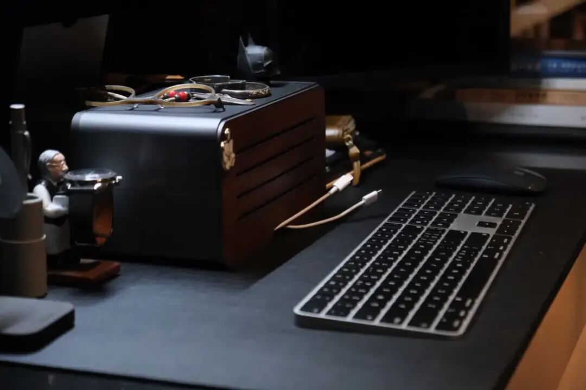
据官方介绍，DeskPad 采用的是仿皮革纹理的素皮材质，不仅在手感方面能够获得类似皮革的优良触感，更加环保的同时也有更好的抗油污效果。当然黑色表面本来也就更不易显脏，抗污渍方面也确实比我之前用的 Grovemade 真皮桌垫要好上不少，咖啡渍等痕迹及时清洁都比较简单，不会像皮革材质总会留下难以完全去除的印迹。
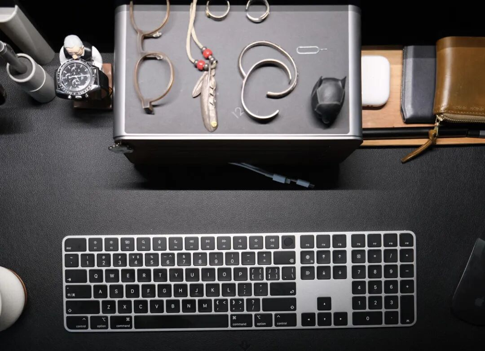
综合来说，Twelve South 的这张 DeskPad 在设计和功能性方面表现都挺出色，价位也算相对适中，如果有相关产品需求，这会是一个不错的选择。
/ 更多热门文章 /